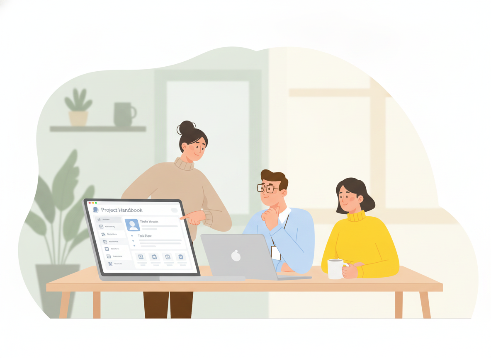
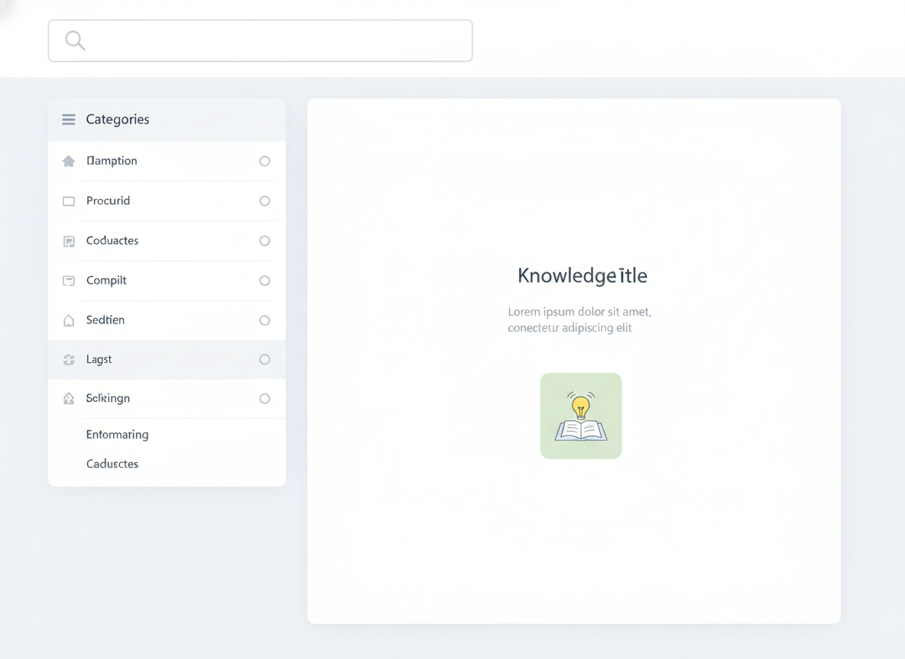

How to Create a Knowledge Base That Actually Gets Used
Most knowledge bases gather digital dust. Teams spend weeks building them, then watch their colleagues keep asking the same questions over Slack and email as if the knowledge base never existed.
The problem isn't that people don't want to help themselves — 78% of CRM leaders say their customers actively prefer to solve issues independently. It's that most knowledge bases are built the wrong way: organized around how the company thinks, not how users search.
This guide shows you how to create a knowledge base that people actually find, read, and use — whether you're building one for customers, employees, or both.

Why Most Knowledge Bases Go Unused
Before building, it helps to understand why most knowledge bases fail. The patterns are consistent:
They're organized like an org chart. Content is bucketed by department — "HR," "Finance," "Product" — instead of by the questions users are actually asking. A new hire trying to submit a reimbursement doesn't think "Finance"; they think "how do I get paid back for my flight?"
The writing is inconsistent. Different contributors use different formats, lengths, and tones. One article is a 2,000-word deep dive; the next is three bullet points with no context. Readers can't build a mental model of what to expect, so they stop trusting the resource.
Nothing is maintained. Knowledge bases get built once and then forgotten. Processes change, software updates, teams restructure — and the knowledge base quietly becomes inaccurate. Research by Pryon found that 47% of professionals already spend one to five hours every day just searching for information. Outdated content makes that worse.
Building a knowledge base that works means solving all three of these problems before you write the first article.
Plan Before You Build: Deciding What to Document
The most common mistake is trying to document everything at once. Start with what matters most.
Start With the Questions Already Coming In
Your best knowledge base outline already exists — it's sitting in your support inbox, your Slack DMs, and your onboarding checklists. Pull the last 30 days of common support tickets or new-hire questions and look for patterns.
Prioritize by two factors:
- Frequency — questions that come up more than once a week deserve an article
- Severity — questions where a wrong answer causes real problems (compliance, data loss, billing) deserve your best writing
Don't Aim for Complete Coverage on Day One
A knowledge base with 20 well-written, accurate articles is more useful than one with 200 half-finished stubs. Publish what you can stand behind, then expand from there.
A good starting scope for most teams: the top 20–30 questions from the past quarter, plus any content that currently lives only in someone's head or in a hard-to-find document.
How to Structure a Knowledge Base for Real Users
Structure determines findability. Even well-written content fails if users can't navigate to it.
Organize by User Task, Not Internal Logic
Group articles by what the user is trying to do, not by which team owns the information. Instead of "IT Policies," try "Setting Up Your Laptop." Instead of "Product — Billing Module," try "Managing Your Subscription."
A useful test: ask someone unfamiliar with your company to find a specific piece of information. If they can't figure out where to look within 30 seconds, your categories need rethinking.
Keep Your Hierarchy Shallow
Two levels of navigation is almost always enough. A top-level category ("Getting Started") and subcategories ("Creating Your First Manual," "Inviting Team Members") give users enough context without making them dig.
Three levels is the practical maximum. Beyond that, users lose track of where they are and start relying on search instead — which means your navigation isn't helping.
Treat Search as Primary Navigation
Even with great structure, most users will skip your categories entirely and go straight to the search bar. This means your article titles and opening paragraphs do most of the work.
Write titles as questions or task-based phrases that mirror exactly how someone would type their problem. "How to reset your password" outperforms "Password Management" every time.

How to Write Knowledge Base Articles People Actually Read
Good knowledge base writing is almost the opposite of good essay writing. Essays build to a conclusion. Knowledge base articles answer the question first and explain afterward.
One Topic Per Article
Resist the urge to bundle related information into one mega-article. A single, tightly scoped article is easier to find, easier to update, and easier to read on a phone.
If you find yourself writing headers like "Also, one more thing…" or "A note on…" — that content probably belongs in its own article, linked from the current one.
Use a Consistent Article Template
Consistency builds trust. When readers know what to expect from every article, they read faster and retain more. A simple knowledge base template covers:
- What this article covers (1 sentence)
- The answer or solution (the main content)
- Step-by-step instructions for processes (numbered, not bulleted)
- What to do if this doesn't work (a troubleshooting note or link)
This structure works for customer-facing help articles and internal documentation alike.
Write at the Right Level
Know your audience before you write. Documentation for support agents can assume familiarity with your product. Documentation for end customers cannot. When in doubt, write for someone who knows what they're trying to do but not how your system works.
Avoid acronyms on first use, keep sentences short, and test every set of instructions by actually following them.
How to Create a Knowledge Base for Employees
Internal knowledge bases have one challenge external ones don't: employees already have workarounds. They email Sarah, they ask in the team channel, they keep a personal notes document.
To break those habits, the internal knowledge base has to be obviously faster than the alternatives.
Assign Clear Ownership
Every section of an internal knowledge base needs an owner — a specific person whose job it is to keep that content accurate. Without ownership, nobody feels responsible when something goes out of date.
A simple governance model: one owner per department, a quarterly review schedule, and a clear process for flagging content that needs updating.
Make It the Single Source of Truth
An internal knowledge base only works if it's the definitive answer — not one of several places people might look. That means actively retiring alternatives: moving policy documents out of Google Drive folders, archiving old wiki pages, and updating Slack pinned messages to point to the knowledge base instead.
Build Habit Through Consistent Use
The easiest way to drive internal adoption is to answer internal questions with a knowledge base link rather than typing out the answer again. Every time you do this, you reinforce the habit — and you improve the article if you notice anything missing while linking.
Maintaining and Improving Your Knowledge Base Over Time
A knowledge base is not a project with a launch date. It's an ongoing system. The teams that get the most value from theirs make maintenance a regular part of their workflow, not a one-time effort.
Schedule Regular Reviews
Quarterly is a reasonable cadence for most teams. During each review, check:
- Are the instructions still accurate?
- Have any products, tools, or policies changed?
- Are there new common questions that don't have articles yet?
Let Usage Data Guide Improvements
Search queries with no results tell you exactly what your users are looking for that you haven't documented. Page exit rates on specific articles often signal content that's confusing or incomplete.
Self-service has become the norm — Salesforce data shows it now resolves around 54% of customer issues. Teams that track which articles reduce support requests (and which don't) can focus their maintenance effort where it matters most.
Make It Easy to Flag Problems
Add a simple feedback mechanism to every article — even just a "Was this helpful?" prompt. When readers can flag problems in the moment, your team doesn't have to guess which articles need attention.
A Knowledge Base That Earns Its Keep
Creating a knowledge base that gets used comes down to three things: write for how people search, not how your company is organized; maintain a consistent structure so readers know what to expect; and treat it as a living resource, not a one-time project.
The upfront investment pays dividends quickly. Support tickets drop. Onboarding gets faster. Teams stop reinventing the wheel every time someone new joins or a process changes.
Ready to build one — or clean up the one you have? Sonat makes it straightforward to create, publish, and maintain professional documentation without any technical setup.
Start free on Sonat